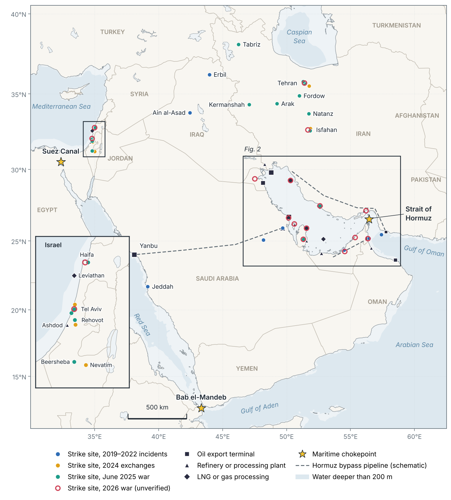
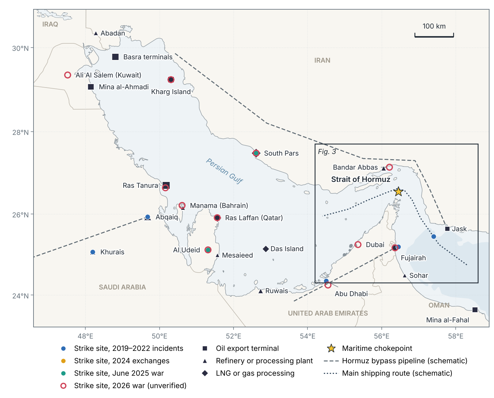
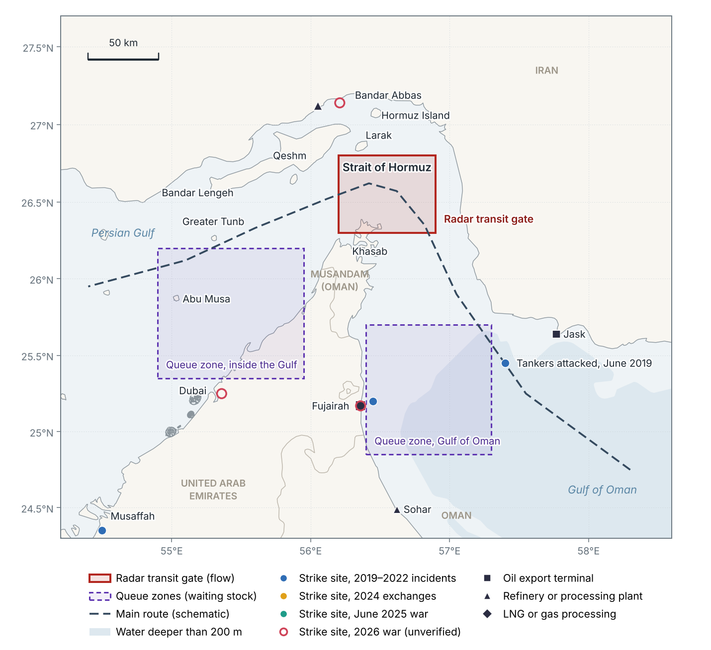
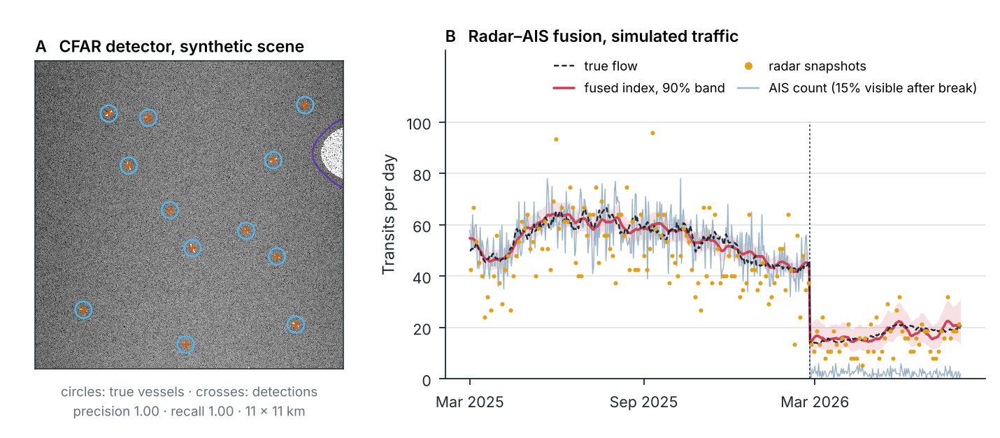
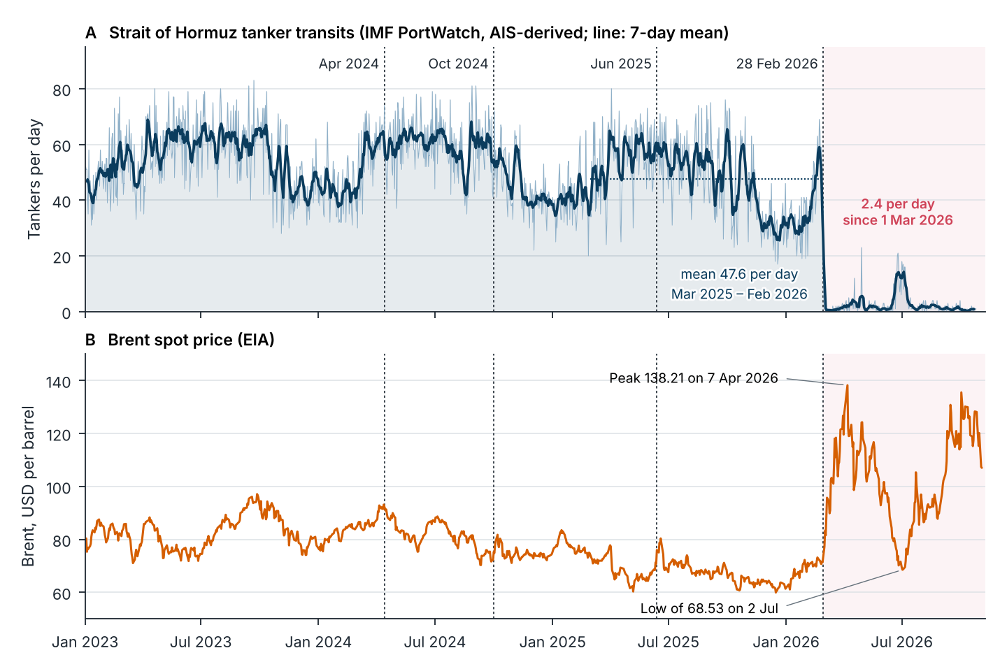
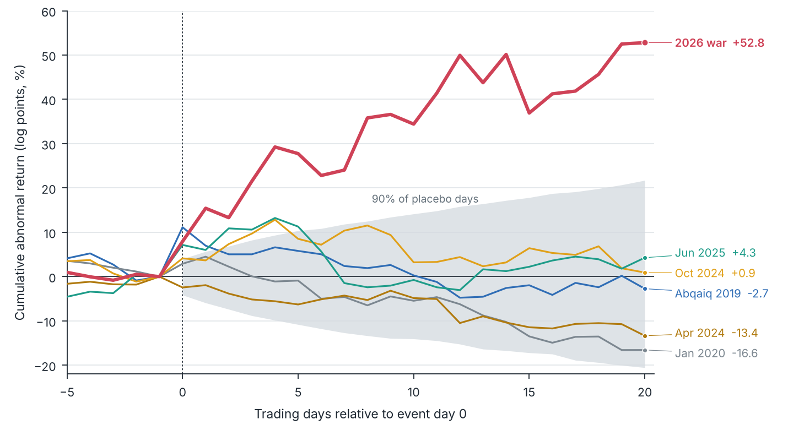
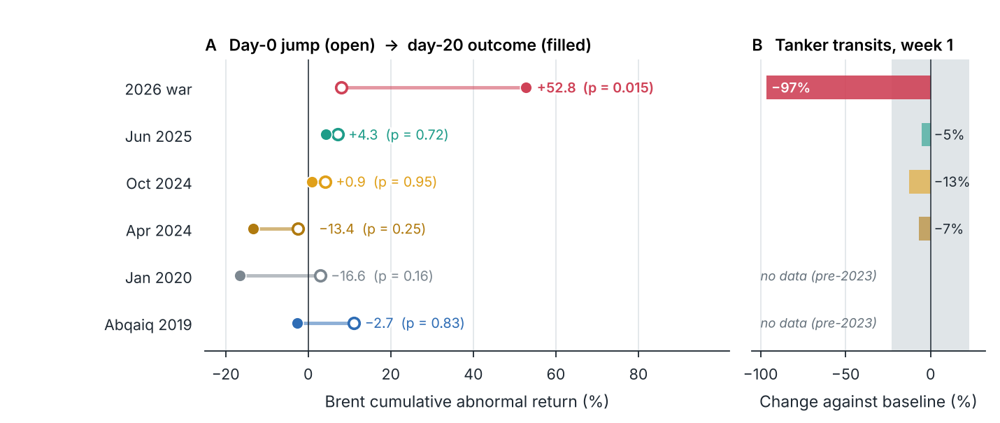

Orbital Evidence on Chokepoint Risk:
Satellite-Observed Shipping in the Strait of Hormuz,
Missile Strikes, and Global Energy Prices
Do missile and drone strikes move energy prices by taking barrels off the water, or by raising a risk premium on barrels that keep flowing? Answering this requires observing chokepoint flows independently of the self-reported ship-tracking data (AIS) that fail precisely when vessels go dark in wartime. This paper sets out a design that builds two measurements from open data and links them to prices. The first is a transit index for the Strait of Hormuz from Sentinel-1 synthetic-aperture radar, which counts steel hulls whether or not they broadcast, converted to flows by Little’s law and fused with AIS in a state-space model that estimates the share of traffic AIS no longer sees. The second is a geocoded strike-exposure index that weights each strike by the energy capacity and sea-lane traffic within reach of where it landed. A three-step identification strategy, consisting of event studies, local projections and an instrumented channel decomposition, separates the physical-flow channel from the risk-premium channel. On simulated scenes the detector reaches precision and recall of 0.997; on simulated traffic in which AIS reports 15% of true transits, AIS alone understates flow by 86% while the fused index is within 2%. Preliminary evidence from public data is consistent with the physical-flow reading. Across six episodes since 2019, Brent jumped 7–11% on the first trading day with or without any loss of flow, but kept rising only in 2026, when AIS-observed tanker transits through the Strait fell from 47.6 to 2.4 per day: a cumulative abnormal return of 52.8 log points after 20 trading days (placebo ), against reversals in every other episode. Six events cannot test the hypothesis; they motivate the measurement programme that can.
Introduction
Roughly a fifth of the world’s oil consumption and a similar share of seaborne LNG normally pass through the Strait of Hormuz, a channel whose shipping lanes are a few kilometres wide. After 28 February 2026 that flow all but stopped. AIS-derived counts from IMF PortWatch (International Monetary Fund 2026) show tanker transits falling from a mean of 47.6 per day in the preceding twelve months to 2.4 per day from March to October 2026, and Brent rising from 71.32 USD per barrel on 27 February to 138.21 on 7 April (U.S. Energy Information Administration 2026), a 94% increase in six weeks (6).
Yet the same price series contains a puzzle. Between 5 June and 2 July 2026 Brent fell 30%, from 97.29 to 68.53 USD per barrel, while AIS-visible tanker transits stayed below three per day until mid-June and only then rose, briefly, to 12–14 per day. Either the market anticipated a reopening, or more traffic was already moving than AIS recorded. AIS is self-reported: in a conflict zone vessels switch transponders off, spoof positions, or lose satellite positioning to jamming. The data that measure chokepoint flows are least reliable exactly when those flows matter most.
This paper proposes to resolve the ambiguity with a sensor that does not depend on cooperation. Synthetic-aperture radar (SAR) images steel hulls day and night, through cloud and dust, regardless of whether a ship broadcasts. The European Sentinel-1 constellation (Torres et al. 2012) has imaged the Strait every few days since 2014, and its archive is free.
Contributions.
The design makes three contributions, each corresponding to one paper of a three-paper thesis.
A sensor-independent transit index for the world’s most important energy chokepoint, together with an estimated dark share, the fraction of traffic that AIS fails to see (4).
A spatial strike-exposure index that converts event geography into a continuous treatment, separating a strike on a refinery from one on a remote air base (5).
A channel decomposition that separates lost barrels from risk premium using flows that are observed rather than inferred (6).
7 reports preliminary evidence from public price and transit data, and 8 discusses threats to validity. The code that produces every number and figure in this paper is described in 11.
Related literature
Six literatures each supply one part of the design; none combines them.
Oil-shock identification.
Supply, demand and news shocks have different price and macroeconomic effects (Kilian 2009; Kilian and Murphy 2014; Baumeister and Hamilton 2019; Känzig 2021). In this literature shocks are inferred from prices, production or announcements; physical chokepoint flows are not observed directly.
Geopolitical risk.
Text-based indices of geopolitical risk move oil prices and investment, and threats differ from acts (Caldara and Iacoviello 2022). Such indices are aspatial: they cannot tell a strike on a processing plant from one on an empty air base.
Satellite data in economics and finance.
Imagery measures activity where official statistics are weak and changes how markets price news (Henderson et al. 2012; Donaldson and Storeygard 2016; Mukherjee et al. 2021). Applications have centred on night lights, car parks and storage tanks rather than transit under conflict.
AIS-based trade monitoring.
Ship-position data nowcast trade and chokepoint transits at daily frequency (Cerdeiro et al. 2020; Arslanalp et al. 2021; Verschuur et al. 2022). Because AIS is self-reported, it degrades under jamming and deliberate silence.
Radar vessel detection.
Constant-false-alarm-rate detectors applied to Sentinel-1 locate vessels at global scale and show that a large share of them do not broadcast AIS (Crisp 2004; Greidanus et al. 2017; Paolo et al. 2024). These tools were built for fisheries and offshore monitoring and have not been linked to commodity prices.
Conflict events and damage from space.
Geocoded event datasets and imagery measure where violence occurs and how much it destroys (Raleigh et al. 2010; Mueller et al. 2021), but have not been tied to energy-infrastructure exposure or market outcomes.
Study area and data
The study area runs from the eastern Mediterranean to the Gulf of Oman (30°–62.5° E, 11°–40.5° N). 1 places strike sites against energy infrastructure, the three regional chokepoints and the pipelines that bypass the Strait. On the illustrative reference layer, strikes in 2024 and June 2025 cluster in Israel and inland Iran, with South Pars the main exception; the 2026 sites ring the Gulf coast and sit on terminals, refineries and LNG plants (2).


3 shows the counting geometry at the Strait. Vessels inside the transit gate are assumed to be under way, so their count converts to a flow (4). Vessels inside the two queue zones are waiting, so their count is a stock that builds when transits stop and drains when they resume. Gate and zones are placeholders to be redrawn against an AIS density raster before any counting.

1 lists the data. Every core input is free and open; licensed data enter only for validation and for price benchmarks that lack a free daily series. Two snapshots ship with the code so that every number in this paper can be reproduced offline: Brent and WTI spot prices from the EIA to 3 November 2026 (U.S. Energy Information Administration 2026), and IMF PortWatch daily transit calls for 1 January 2023 to 25 October 2026 (International Monetary Fund 2026). The PortWatch snapshot consists of API responses of 28 October 2026 taken from a public replication package and checked row by row against the raw responses stored there; the full history from January 2019 should be pulled from the IMF before publication.
| Layer | Dataset | Frequency, access | Role |
|---|---|---|---|
| Radar imagery | Sentinel-1 IW GRD, VV and VH, 10 m | Every 2–6 days; free | Vessel detection (core) |
| Optical imagery | Sentinel-2, 10 m | Every 5 days if cloud-free; free | Count cross-check, vessel type |
| Vessel detections | Global Fishing Watch SAR detections matched to AIS | Per scene; free for research | Detector benchmark |
| Thermal anomalies | VIIRS active fire and gas flaring | Daily, 375 m; free | Damage verification |
| Commercial imagery | PlanetScope; ICEYE, Capella or Umbra SAR | Daily or tasked; licensed | Time-of-day gaps, validation |
| AIS transits | IMF PortWatch daily chokepoint calls | Daily since 2019; free | Calibration and benchmark |
| Strike events | ACLED remote-violence events; UCDP; GDELT | Event level; free for research | Treatment |
| Prices | Brent, WTI (EIA); Dubai, TTF, JKM, futures curves | Daily; free or terminal | Outcomes |
| Freight and risk | Tanker rates; crude volatility index; dollar | Daily; licensed or free | Channel markers |
| Infrastructure | Global Energy Monitor; EIA; OpenStreetMap | Static; free | Exposure weights |
Measuring transits from orbit
Vessel detection
Multilooked SAR intensity over homogeneous sea follows a Gamma distribution with shape , the equivalent number of looks. A pixel with intensity is declared a target when it exceeds a multiple of the mean of a background ring that surrounds a guard window, where inverts the regularised upper incomplete gamma function. With and a design false-alarm rate of per pixel, , or 7.5 dB above the local mean. Detection runs in the cross-polarised VH band, where sea clutter is weakest, with confirmation in VV. Detected pixels seed a hysteresis step that grows into neighbouring pixels above a looser threshold, recovering whole hulls; detections are then censored from the background and the statistics recomputed so that neighbouring ships in an anchorage do not mask one another. Land, a 500 m coastal buffer and fixed structures (pixels whose median VH over the previous year exceeds dB) are masked. Objects of 60–480 m length are retained as vessels, and those of at least 180 m form a large-tanker class.
From snapshot counts to flows
A radar image is a snapshot. If vessels are inside a gate of along-route length that they cross at mean speed , Little’s law (Little 1961) gives the flow and its Poisson sampling error: With km, knots and the calm-period mean of 88.6 transits per day across all vessel types, one pass sees 13.5 vessels on average and estimates the flow with a 27% standard error; a 200 km gate would reduce it to 17%. A single pass therefore cannot detect a 10% change in traffic but cannot miss a 90% one.
Fusing radar with AIS
Radar passes are irregular and noisy; AIS is daily but under-reports when ships go dark. Let be the log of the true flow, the log of the share of traffic that AIS still records, and the log detection efficiency of the radar. The state-space model is Before the conflict, is fixed at zero, so AIS is treated as truth and calibrates . From the conflict start, both and receive a one-off break innovation and is free to drift, so radar identifies the true flow and is the estimated dark share. Observation variances follow the Poisson approximation evaluated at the predicted count; evaluating them at the observed count over-weights high draws and biases the index upward. The model is estimated with a Kalman filter and Rauch–Tung–Striebel smoother.
Validation on simulated data
4 shows both components on simulated inputs. On synthetic Gamma-clutter scenes with injected targets, the detector reaches precision 0.997 and recall 0.997, its empirical false-alarm rate matches the design rate, and vessel length is estimated with a mean error of m and a dispersion of 9 m. In 40 simulated chokepoint histories where true flow falls 70% and AIS reports only 15% of what still transits, AIS alone understates post-break flow by 86%; the fused index is off by 1.5%, and its 90% band covers the true flow 95% of the time. When no traffic goes dark, the model does not invent any. Real sea clutter is rougher than the simulation, so detection thresholds must be tuned on a hand-labelled sample of Sentinel-1 scenes before any real count is trusted.

Strike geography and exposure
Strikes are ACLED events of type Explosions/Remote violence with sub-types Shelling/artillery/missile attack and Air/drone strike in thirteen countries from Lebanon to Oman (Raleigh et al. 2010). Events located only to a region are dropped; UCDP and GDELT serve as cross-checks, and news time stamps assign each event to the trading day on which markets could first react. For strike at location , energy assets of capacity (million barrels of oil equivalent per day) at locations , and the main shipping route , exposure is with great-circle distance , baseline bandwidths km and km, and , the approximate flow through the Strait. The daily shock is with optional severity weights . 2 shows the ordering the index produces on documented sites.
| Strike site | Date | (mboe/d) | Driven by |
|---|---|---|---|
| Tankers, Gulf of Oman | 13 Jun 2019 | 20.1 | On the shipping route (0.9 km) |
| Abqaiq | 14 Sep 2019 | 7.0 | Oil processing plant |
| South Pars, Asaluyeh | 14 Jun 2025 | 4.0 | Gas processing |
| Fujairah anchorage | 12 May 2019 | 2.7 | Terminal 10 km away; route 94 km |
| Haifa refinery | 15 Jun 2025 | 0.3 | Refinery |
| Al Udeid air base | 23 Jun 2025 | 0.1 | Nearest plant 29 km away |
| Nevatim air base | 14 Apr 2024 | 0.0 | No energy asset within reach |
| Natanz | 13 Jun 2025 | 0.0 | No energy asset within reach |
Note. Exposure is not damage: a strike that hits a refinery and one intercepted above it score the same. Damage is flagged separately from VIIRS thermal anomalies within 2 km and 48 hours, burn scars in the next cloud-free Sentinel-2 image, and loss of Sentinel-1 coherence over the facility footprint. Bandwidths and are set on a pre-specified grid and are never chosen by looking at price responses.
Identification
5 summarises the strategy. A strike can raise prices by removing flow (the path through and ) or by raising the premium for bearing risk on flow that continues (the direct path ). Satellites observe the first path; the second is recovered as the remainder.
[Diagram: see the PDF version.]
Step 1: event study.
With the daily log return in percent, abnormal returns are measured against the mean over trading days to (MacKinlay 1997): Day 0 is the first close after the event, so weekend strikes map to Monday. Each event receives a Student- -value from its estimation window and a placebo -value: the share of about 2,600 non-event trading days since 2015 with a at least as large. Every event is reported individually because events are few.
Step 2: dose and dynamics.
A cross-section relates abnormal returns to exposure, verified damage and controls , . Local projections (Jordà 2005) trace the response of each price (in ) to the exposure shock: where contains lagged returns, the shock, the flow index, the geopolitical risk index (Caldara and Iacoviello 2022), the dollar and implied volatility. Inference uses Newey–West errors, with lag-augmented robust errors as a check (Montiel Olea and Plagborg-Møller 2021). In 200 Monte Carlo replications of a known autoregressive response, the estimator’s bias is below 0.012 at every horizon and its nominal 90% intervals cover the truth 88–95% of the time.
Step 3: channel decomposition.
The total response splits into a physical and a risk-premium part, The flow response comes from the local-projection equation with the satellite flow index as the outcome. The price response to lost flow, , is identified with external instruments (Stock and Watson 2018): flow disturbances that carry no war news, such as fog, storms and scheduled terminal outages. Asset prices offer an instrument-free cross-check, because the two channels load differently on them: physical shortage steepens prompt futures spreads, lifts tanker freight and widens the premium of seaborne over landlocked crude, whereas pure risk raises option-implied volatility.
Hypotheses.
3 states five testable hypotheses with the result that would falsify each.
| Hypothesis | Test | Falsified if | |
|---|---|---|---|
| H1 | The radar index tracks AIS before 28 Feb 2026 and exceeds it afterwards | Weekly correlation before; radar minus AIS after | Correlation before, or no positive gap after |
| H2 | Abnormal returns rise with strike exposure | Cross-section of CAR on , permutation inference | Slope zero or negative |
| H3 | Price effects without observed flow loss revert within 10 trading days; those with flow loss do not | Local projections split by flow response | Both groups persist, or both revert |
| H4 | Responses order Dubai/Oman Brent WTI; LNG reacts to strikes on gas assets | Panel event study across benchmarks | WTI responds as much as Dubai/Oman |
| H5 | The radar–AIS gap predicts freight and prompt spreads beyond AIS | Predictive regressions, out-of-sample | No incremental predictive power |
Preliminary evidence
On public data available today, only the episode that stopped the tankers produced a lasting rise in Brent. All figures in this section are computed from EIA prices and IMF PortWatch transits; nothing is simulated.

6 shows the two series. Transits fluctuate between 30 and 70 tankers a day through 2023–2025 with no visible response to the 2024 and June 2025 exchanges, then collapse at the end of February 2026. Brent’s response mirrors that asymmetry.

7 and 8 and 4 report the event study. Three findings stand out.
Day-0 jumps do not discriminate. Brent rose 11.1, 7.2 and 7.9 log points on the first trading day after Abqaiq (2019), June 2025 and the 2026 war; all three are significant against placebo days. Only one involved any loss of flow.
Persistence does. Ten trading days later, Abqaiq and June 2025 were within one point of zero. The 2026 episode stood at (placebo ) and reached by day 20 (), a 70% rise in price.
Flows moved only once. First-week transit changes of to in 2024 and 2025 lie within the calm-period noise band of ; the 2026 fall of 97% does not. The premium of Brent over WTI widened by 12.83 USD in 2026 and by less than 1 USD, or narrowed, in every other episode.

| Brent CAR (log points, %) | Transits | Brent–WTI | ||||
|---|---|---|---|---|---|---|
| 3-5 Episode | Day 0 | Day 0 | Day 20 | , day 20 | wk 1 (%) | USD |
| 2026 war | 2 Mar 2026 | 7.9 | 52.8 | 0.015 | -96.6 | 12.83 |
| June 2025 war | 13 Jun 2025 | 7.2 | 4.3 | 0.718 | -5.1 | 0.40 |
| Iran’s 2nd attack on Israel | 1 Oct 2024 | 4.1 | 0.9 | 0.946 | -12.8 | 0.70 |
| Iran’s 1st attack on Israel | 15 Apr 2024 | -2.5 | -13.4 | 0.247 | -7.0 | -5.28 |
| Soleimani; Ain al-Asad | 3 Jan 2020 | 2.9 | -16.6 | 0.158 | – | -1.94 |
| Abqaiq and Khurais | 16 Sep 2019 | 11.1 | -2.7 | 0.829 | – | -1.25 |
Notes. is the placebo -value. Transits: change in mean daily tanker transits, days to against days to ; dashes mark episodes before the PortWatch snapshot. Brent–WTI: change in the spot spread from day to day . The January 2020 day-20 figure also absorbs early pandemic news.
Two further results frame the identification problem. First, ordinary transit noise carries no price signal: over 164 calm weeks, a 10% fall in weekly tanker transits is followed by a contemporaneous Brent change of (90% interval to ), and the correlation of weekly changes is 0.003. Identification must therefore come from disruptions, not day-to-day variation. Second, within the 34 weeks of the closure, Brent and tanker transits are negatively correlated in levels (), and in June 2026 the price fall began about two weeks before the brief recovery in AIS-visible transits. Transits then fell back below three per day by late July, and Brent rose again, to 135.51 on 2 October.
These patterns are what H3 predicts, but six events, one with flow loss, test nothing. The flows are AIS-based, the very measure the design treats as unreliable in conflict; whether the June price fall anticipated a reopening or reflected dark traffic already under way is the question the radar index is built to answer.
Threats to validity
5 lists the principal threats and responses. Three deserve emphasis. Sentinel-1 passes at fixed local times near dawn and dusk, so convoys timed to daylight could be missed; mid-morning optical counts and tasked commercial radar address this. The calibration treats pre-war AIS as complete, so chronic dark traffic would bias it; results are reported under an assumed 5–15% pre-war dark share. And one episode dominates the sample, so every specification is reported with placebo inference and leave-one-episode-out estimates.
| Threat | Why it matters | Response |
|---|---|---|
| Fixed overpass times | Sentinel-1 images near dawn and dusk; daylight convoys missed | Sentinel-2 and PlanetScope counts; tasked commercial SAR |
| Revisit gaps | 2–6 days between passes hide short disruptions | State-space fusion; weekly index as the headline |
| False alarms | Platforms, islets, wind fronts and azimuth ghosts mimic vessels | Static mask, length limits, VV confirmation, labelled sample |
| Vessel type | 10 m radar cannot tell a tanker from a bulk carrier | All-vessel and large-vessel indices; optical classification |
| Speed assumption | Escorted or slow convoys break the count-to-flow conversion | Wake-based speeds; queue stocks as a second signal |
| Dominant episode | Pooled estimates reflect 2026 alone | Placebo inference; leave-one-out; every event reported |
| Confounding news | OPEC decisions, stock releases and ceasefire talks coincide with strikes | Narrow windows; intraday futures; drop overlapping days |
| Event-data bias | Coverage and precision vary by country and period | Cross-source agreement; geo-precision filter |
Ethics, data availability and limitations
Dual use.
Counting ships in a war zone could help someone target them. The project therefore releases only aggregate counts and indices, never vessel-level positions, tracks or identities, and nothing less than 30 days after the pass it describes. Strike records come only from published event datasets.
Neutrality.
Attribution fields repeat what each source reports, including where claims are disputed. Place names and boundaries follow Natural Earth and imply no position on any territorial question.
Limitations of this version.
No Sentinel-1 scene has yet been processed: the detector and fusion model are validated on simulated data only, and the Earth Engine pipeline has not been executed. The strike layer in 1 and 2 and 3 is an illustrative reference compiled by the author; its 2026 sites are unverified, and the analysis layer will be built from ACLED. Infrastructure capacities are indicative and will be replaced from Global Energy Monitor and EIA records. The preliminary evidence rests on AIS counts.
Data and code.
Code, configuration, data snapshots and the scripts that regenerate
every table and figure are available from the author as the
hormuz-orbital repository (11). ACLED
records are not redistributed.
Conclusion
Chokepoint risk is usually measured from prices and words. This design measures it from orbit, by counting the ships themselves. Public data already show that the one recent episode in which tankers stopped moving is the one in which oil prices stayed high, while strikes that left traffic intact produced jumps that faded within two weeks. A radar-based transit index, an exposure-weighted strike treatment and an instrumented decomposition can turn that pattern into an estimate of how much of a war’s price premium is barrels lost and how much is fear.
Code and reproducibility
The repository rebuilds every table and figure in this paper with one command and passes 14 unit tests. 6 lists its components and their status.
| File | Function | Status |
|---|---|---|
s1_cfar.py |
CFAR detector, object measurement, synthetic scenes | Tested on simulated scenes |
s1_gee_pipeline.py |
Earth Engine scene selection, masking, detection, export | Not run (needs an account) |
flow_index.py |
Little’s law, radar–AIS fusion, export processing | Tested on simulated traffic |
strike_exposure.py |
Exposure index and daily shock | Tested; run on reference layer |
data_sources.py |
Loaders for prices, PortWatch and ACLED | Snapshot paths run |
event_study.py |
Abnormal returns, and placebo inference | Tested; run on Brent |
local_projections.py |
Impulse responses, HAC or lag-augmented | Monte Carlo checked; run |
run_all.py |
Rebuilds all tables and figures | Run end to end |
Pre-specified robustness grid
All of the following are fixed before any price regression is estimated and reported in full: estimation windows of 60, 130 and 250 trading days; exposure bandwidths km; Hormuz-dependent assets only; market-model returns with equity, dollar and copper factors; weekly instead of daily data; and every specification on both spot and front-month futures prices.